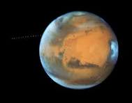

Mars is like earth but it did't have water.The scientist think that it may have ancient life in mars.Its dense core is made up of nickel and sulphur. Its outer crust comprises iron ,magnesium,calcium, and potassium.a rocky mantle lies between the core and crust.Mars appers red as due to the rusting of iron found in rocks ,soil and dust
